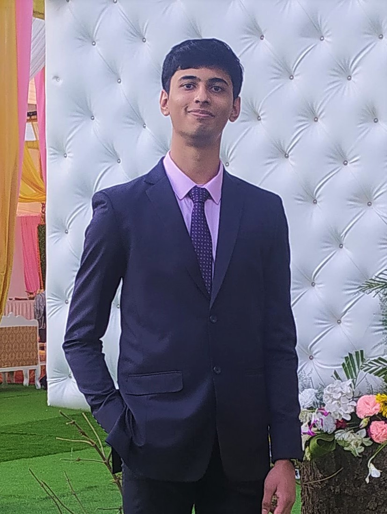
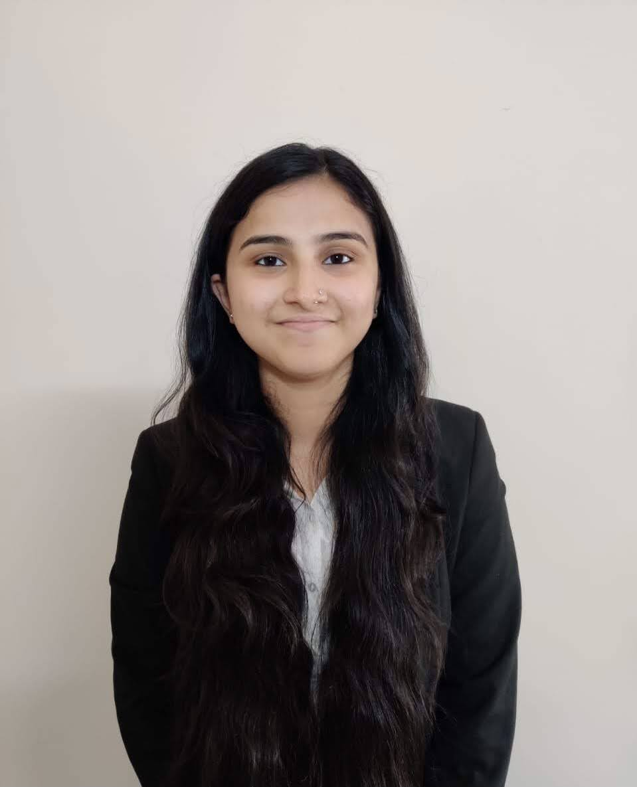

We at Discover Delhi are passionate about curating the best first introduction to Delhi and its historic Chandni Chowk. Our team consists of true-blue Delhites who've grown up falling in love with the place and want to replicate the charm for our visitors!
| Isha Pandey | Rajnish Sarin | Kavi Bhavsar |
|---|---|---|
| Founder | CEO | CTO |
| Born & bought up in Delhi, Isha always wanted everyone to be able to experience the city's magic. Right after college, she set out to achieve this dream by building Discover Delhi with help from her family & college friends, Rajnish & Kavi. She hopes she has succeeded in sharing the charm of the city! | While Rajnish does not believe in magic, he concedes Delhi has its charms. A practical & level-headed guy, he looks after the "boring stuff" that keeps our company going. You can reply on him to suggest the best food joints though! | What's a CTO? Chief Trip Officer, ofcourse! Kavi has a knack for curating experiences by blending fun activities, beautiful sights, and mouth-watering food (with help from Rajnish in this department) making every trip memorable for our visitors. You can also rely on him to know every nook & corner of the city, making our trips a truly unique adventure! |
Wouldn't it be great to have someone narrate history to you as you walk amidst it? Our experienced tour guides are the perfect companions for this experience. They know Delhi like the back of their hands and are magical storytellers!
Know more about them here before you decide to sign up:
| Parth Rajagopalan |
|---|
|  |
| Conversant in Hindi, English & Tamil, Parth is a licensed Regional Level Tourist Guide with 5 years of experience. He loves momos & is an expert at helping tourists bargain! |
| Priyadarshini Rathore |
|---|
|  |
| Fluent in Punjabi, Hindi & English, Priyadarshini has an Incredible India Tourist Guide License and 3 years of experience. She also has a soft spot for Delhi's winters & Paranthe Wali Gali! |
A common trait with all our guides - they are happiest when our visitors are! Feel free to ask them questions to have the best experience.
To book a trip, head on to the registration page. We can't wait to show you the marvelous Chandni Chowk!